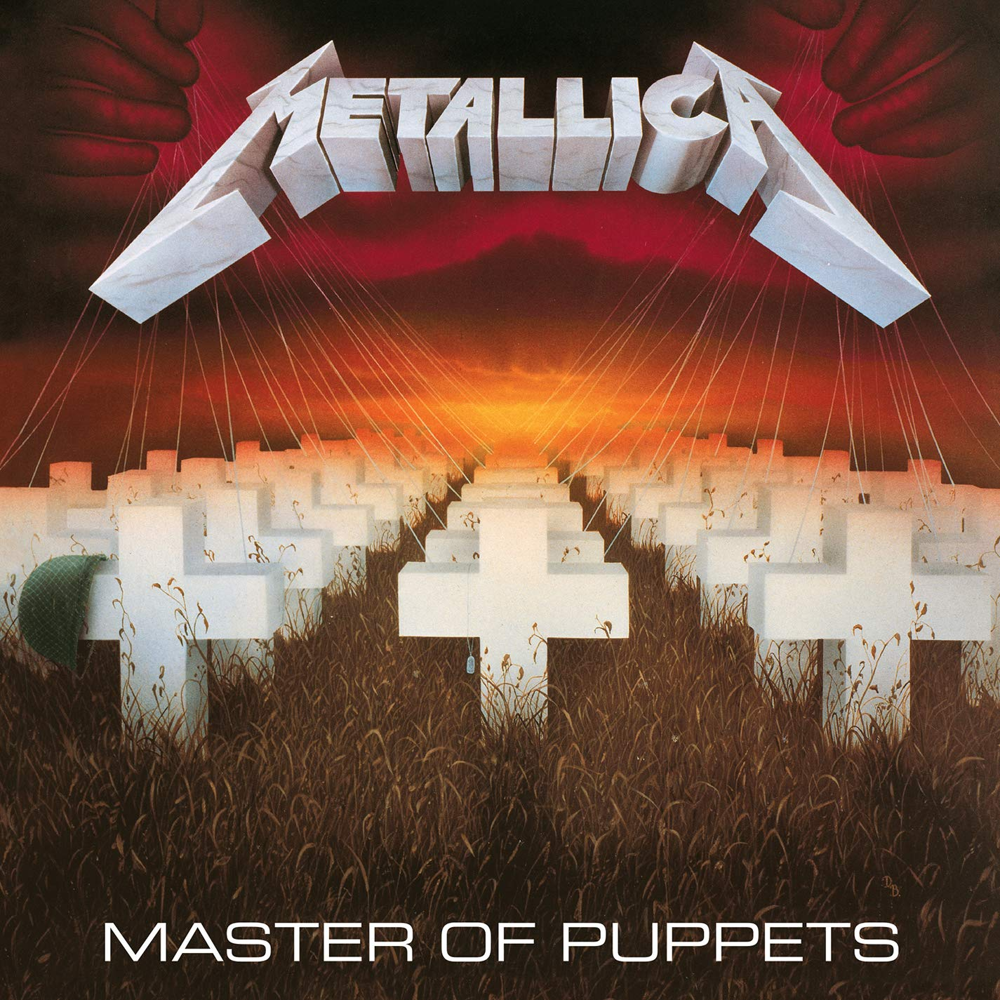
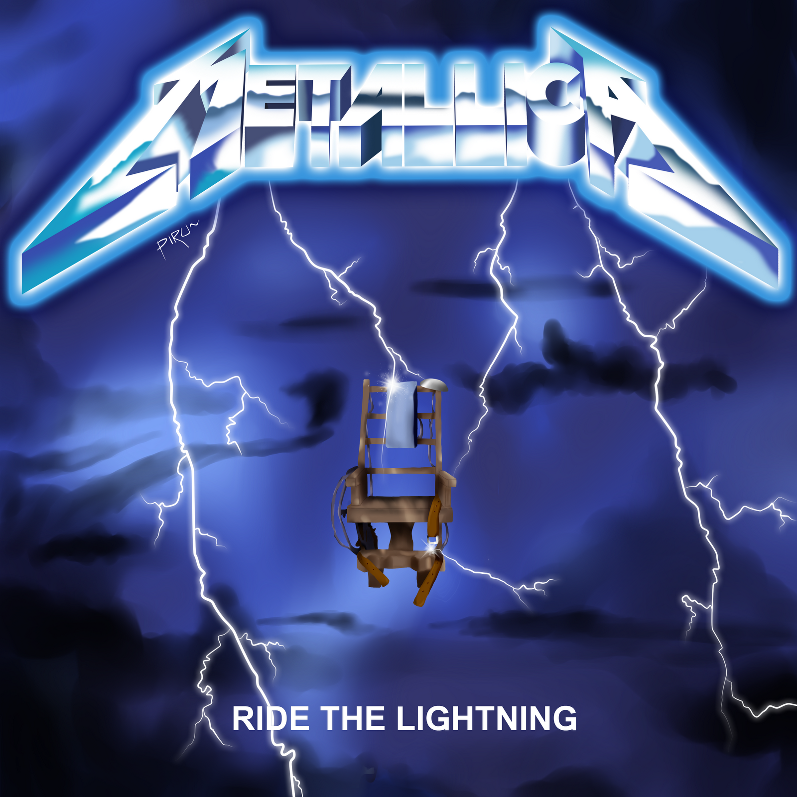
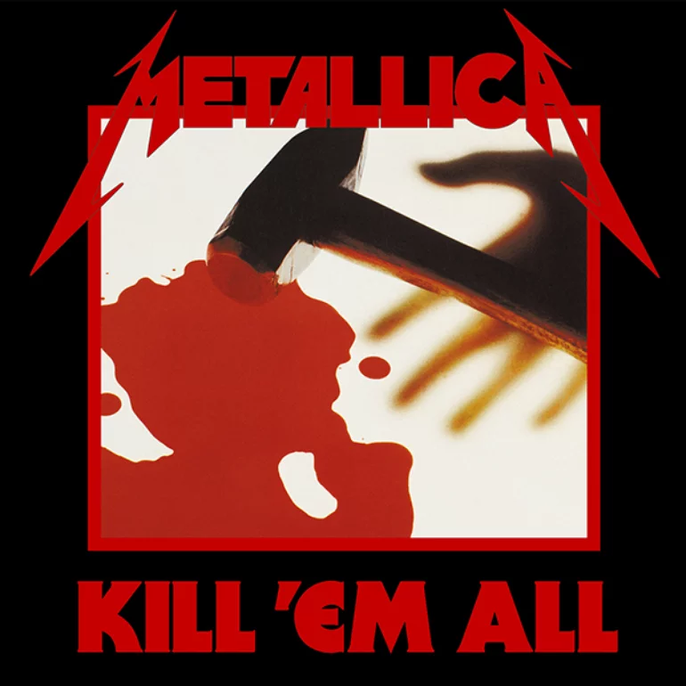

Descubre aqui sus mejores álbumes
Master Of Puppets
1984
Uno de los mejores álbumes de la banda. Recién salido del horno en 1984, se convirtió en uno de los discos más famosos de la banda y de los que nunca pueden faltar en los conciertos.
Ride The Lightning
Su tercer album y un sonido mejorado
Ride The Lightning Fue un album que sorprendió a muchos ya que mejoraba por muchos los sonidos que la banda ya había establecido en sus primeras canciones
Kill Em All
El album que lo empezo todo
Sin duda el album más importante y no solo porque fue el primero de la banda, si no también porque abrió una ola de nueva musica en esa época, puso un antes a después de quienes eran la banda y como iba a ser todo a partir de ese momento.
